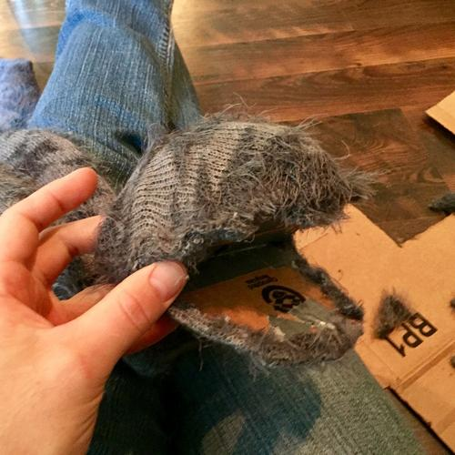
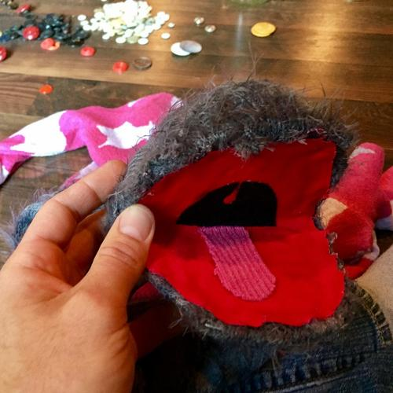
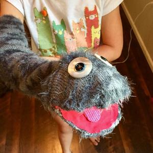

Ah, to be a kid again... It’s mid-July in the heart of summer vacation. The air is thick and heavy, heated to uncomfortable levels. The kids are left to fend for themselves and try to find modes of entertainment which they’d prefer doesn’t involve going outside in the heat. So they’re stuck inside with seemingly limited choices. Or so they think...
Ella complains regularly that she’s bored. (Oh, to have that “problem.”) I try to give her ideas of things to do which almost always involve making or creating something – nothing exercises the mind like a good creative project. “Color a picture. Draw something. Build with your LEGO. Paint rocks. Read a book... or better yet, clean your room!” : )

She had recently shown some interest in puppets, probably due to the ventriloquist comedians she’s been watching on YouTube. When I got home from work she was browsing puppets on the internet that she’d like to buy. “I’m not spending that much money on something you’ll probably lose interest in after a handful of times playing with it.”
But I’m not one to crush a kid’s ambition. On the contrary! I try to embrace anything they find interesting no matter how fleeting or mundane the subject to help them explore as much of the world as possible because, who knows what thing they’ll eventually latch onto? You have to at least try things, right?

So instead of shutting her down and walking away, I told her to try and make a puppet - kill two birds with one stone. After all, we’ve made tons of brown paper bag puppets before, so a slightly better version shouldn’t be too hard to make. She was discouraged immediately because she had no clue where to start... which is understandable.
I began to guide her through the thought process of building a crude puppet ‘skeleton’ with cardboard and duct tape. Then we thought we needed some skin for our puppet but we didn’t have any fabric lying around. Her mom had the great idea of cutting up an old sweater she had stored in the basement. So we used a couple articles of clothing we were going to probably throw away as free stand-in’s for expensive fabric we could have bought from a hobby store.

We shoved the puppet skeleton head through a sweater sleeve and cut slits for the mouth. We hot-glued the “skin” on over the skeleton, then glued some red fabric inside the mouth along with a pink tongue and black throat. We cut the sleeve off around the shoulder making the puppet snake-like. (She said she wanted the puppet to be a monster.) Found some old, large, white buttons and glued them on as eyes, then added smaller black ones for pupils. She wasn’t quite happy with it until she added a flower to the head because, apparently, the monster was a lady... I didn’t realize.
It turned out to be a quick project that we had a lot of fun with. The best part is that we didn’t spend a dime and I think we both even learned a little something from it!